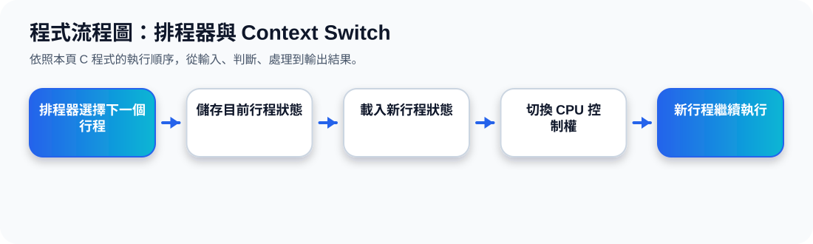

二、三種 Scheduler 的角色
核心觀念 Scheduler 是作業系統的排程決策者。Long-term 控制哪些工作進入系統；Short-term 決定下一個拿 CPU 的行程；Medium-term 用 swap 調整記憶體與多工負載。
Long-Term Scheduler
較少執行又稱 job scheduler，選擇哪些 process 進入 ready queue，控制 multiprogramming 程度。
Short-Term Scheduler
最常執行又稱 CPU scheduler，從 ready queue 選擇下一個 process 使用 CPU，必須很快。
Medium-Term Scheduler
必要時執行把行程從記憶體 swap out，之後再 swap in，以降低或調整系統負載。
Scheduler 流程動畫
三、Ready Queue、CPU、I/O Waiting 的關係
在多工系統中，行程可能排隊等待 CPU，也可能正在等待 I/O。Short-term scheduler 會從 ready queue 挑選行程進入 CPU；若行程需要 I/O，會暫時離開 CPU 進入 waiting。
Ready Queue
CPU
Process
I/O Waiting
Ready 是「可以跑，只是還沒拿到 CPU」；Waiting 是「現在不能跑，因為還在等事件或 I/O」。
四、Context Switch：CPU 從一個行程切到另一個行程
Context switch 發生時，OS 需要保存目前行程的狀態，然後載入下一個行程的狀態。這些狀態主要存在 PCB 中，因此 PCB 是切換行程的關鍵。
Process 0
save state into PCB0
Process 1
reload state from PCB1
Context Switch 動畫
Context switch 不是免費的。切換時 CPU 沒有真正執行使用者程式，所以 OS 會希望切換必要但不要太頻繁。
五、Context Switch 的成本
成本來源
儲存與載入 PCB、切換暫存器、更新記憶體管理資訊，都需要時間。
硬體支援
若硬體提供多組 registers 或更快的保存機制，context switch 成本可降低。
投影片強調：context-switch time 是 overhead，系統切換越複雜，花費在切換上的時間就越多。
程式流程圖與流程講解
程式流程圖：排程器與 Context Switch

流程講解
可編輯 C 程式範例與線上編輯器
可編輯 C 程式：排程器與 Context Switch
這段程式依照上方流程圖設計，包含中文註解，適合貼到線上編輯器直接執行與修改。
程式題目完整教學內容
程式題目完整教學：排程器與 Context Switch
一、程式題目講解
用 PCB 結構模擬 context switch 時儲存與載入行程狀態。
重點是 PCB 內包含行程名稱、PC 與暫存器值，切換時要保存舊行程並載入新行程。
二、完整程式碼
以下程式碼可直接複製到 C 語言線上編譯器執行。程式中已加入中文註解，說明主要變數、判斷流程與輸出目的。
#include <stdio.h>
/*
主題 10：排程器與 Context Switch
功能：模擬兩個行程之間的 context switch。
*/
typedef struct {
char name;
int pc; // program counter
int reg; // register
} PCB;
int main(void) {
PCB p1 = {'A', 100, 5};
PCB p2 = {'B', 200, 8};
printf("目前執行 P%c：PC=%d, REG=%d\n", p1.name, p1.pc, p1.reg);
printf("Context Switch：儲存 P%c 狀態。\n", p1.name);
p1.pc += 10;
p1.reg += 1;
printf("載入 P%c 狀態：PC=%d, REG=%d\n", p2.name, p2.pc, p2.reg);
printf("CPU 控制權交給 P%c。\n", p2.name);
return 0;
}三、程式執行結果
目前執行 PA：PC=100, REG=5
Context Switch：儲存 PA 狀態。
載入 PB 狀態：PC=200, REG=8
CPU 控制權交給 PB。結果說明：重點是 PCB 內包含行程名稱、PC 與暫存器值，切換時要保存舊行程並載入新行程。 程式依照設定的資料與控制流程逐步輸出，因此可以從結果看到每個步驟的執行順序與狀態變化。
四、程式流程圖與流程圖說明
本頁上方已提供對應的程式流程圖，圖中以「開始、資料設定、條件判斷、重複處理、輸出結果、結束」呈現程式執行順序。
程式先顯示目前執行的 P A，模擬儲存狀態後，載入 P B 的狀態並把 CPU 控制權交給 P B。
五、重要函數與語法說明
typedef struct 定義 PCB 資料結構；結構變數 p1、p2 儲存行程狀態；. 運算子讀取結構欄位。
六、整體說明
本題的學習重點是把作業系統概念轉成可觀察的 C 程式流程。學生應先理解題目概念，再對照程式碼、流程圖與執行結果，掌握變數設定、條件判斷、迴圈處理與輸出結果之間的關係。